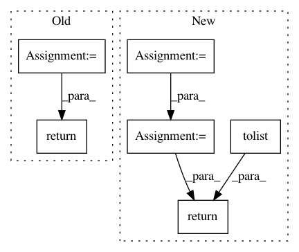

609a73ddcee8d3a12a9ae2c7f6e06aac6013c422,cnn_text_classification.py,CNNClassifier,__eval,#CNNClassifier#Any#,57
Before Change
F.cross_entropy(logit, target, reduction="sum")
predictions = torch.max(logit, 1)[1].view(target.size())
corrects += (predictions.data == target.data).sum()
return 100.0 * corrects / len(data_iter.dataset)
def fit(self, X, y, sample_weight=None):
start = time() if self.verbose > 0 else None
train_iter, dev_iter = self.__preprocess(X, y, sample_weight)
After Change
self.__model.eval()
preds = []
targets = []
for batch in data_iter:
feature, target = batch.text, batch.label
feature.data.t_()
target.data.sub_(1)
if self.cuda and torch.cuda.is_available():
feature, target = feature.cuda(), target.cuda()
logit = self.__model(feature)
F.cross_entropy(logit, target, reduction="sum")
preds += torch.max(logit, 1)[1].view(target.size()).data.tolist()
targets += target.data.tolist()
return self.scoring(targets, preds)
def fit(self, X, y, sample_weight=None):
start = time() if self.verbose > 0 else None
train_iter, dev_iter = self.__preprocess(X, y, sample_weight)
In pattern: SUPERPATTERN
Frequency: 3
Non-data size: 6
Instances
Project Name: Shawn1993/cnn-text-classification-pytorch
Commit Name: 609a73ddcee8d3a12a9ae2c7f6e06aac6013c422
Time: 2019-04-25
Author: rriva002@ucr.edu
File Name: cnn_text_classification.py
Class Name: CNNClassifier
Method Name: __eval
Project Name: tyarkoni/pliers
Commit Name: 1ddc26b3cfc16daae7cfdde9a730be33b8b690c0
Time: 2020-03-02
Author: rbrrcc@gmail.com
File Name: pliers/extractors/text.py
Class Name: PretrainedBertExtractor
Method Name: _postprocess
Project Name: QUANTAXIS/QUANTAXIS
Commit Name: 4f51a511dd924f89fe9ec9ee3da944779cc0876f
Time: 2018-09-13
Author: yutiansut@qq.com
File Name: QUANTAXIS/QAWeb/fetch_block.py
Class Name:
Method Name: get_block